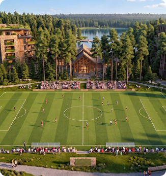

Новини


Статистика споживання комунальних послуг
Графік споживання
Тижневе споживання електроенергії
Календар роботи комунальних служб та замовлених послуг
October
останнє оновлення: 10.09 20:22
1234567
891011121314
15161718192021
22232425262728
2930
October
Ваші замовлення:
- Орендний договір
- Сервіс із ремонту ліфту
Комунальні послуги:
- Вивезення сміття
- Прибирання території комплексу
- Планові перевірки комунакацій